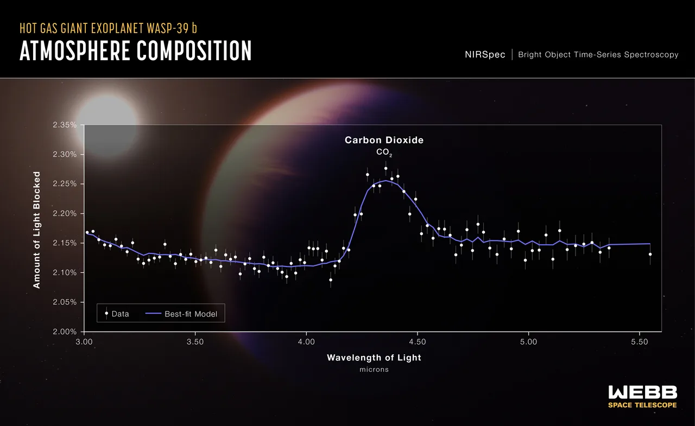

25. August 2022
Erster eindeutiger Nachweis von Kohlendioxid in einer Exoplanetenatmosphäre
Kurz nach Beginn seines wissenschaftlichen Betriebs hat das James Webb Space Telescope in der Atmosphäre des rund 700 Lichtjahre entfernten "heißen Saturn" WASP-39 b zweifelsfrei Kohlendioxid nachgewiesen. Gemessen wurde das Licht des Sterns, das während eines Transits durch die Atmosphäre des Planeten fällt. Die Erhebung bei 4,3 Mikrometern im Spektrum zeigt die Absorption durch Kohlendioxid. Spätere Messungen fanden in der Atmosphäre von WASP-39 b auch Schwefeldioxid, das durch Photochemie entsteht, also durch die Einwirkung des Sternenlichts.
Quelle: ESA/Webb: "Webb detects carbon dioxide in exoplanet atmosphere." Online; esawebb.org; 25.08.2022